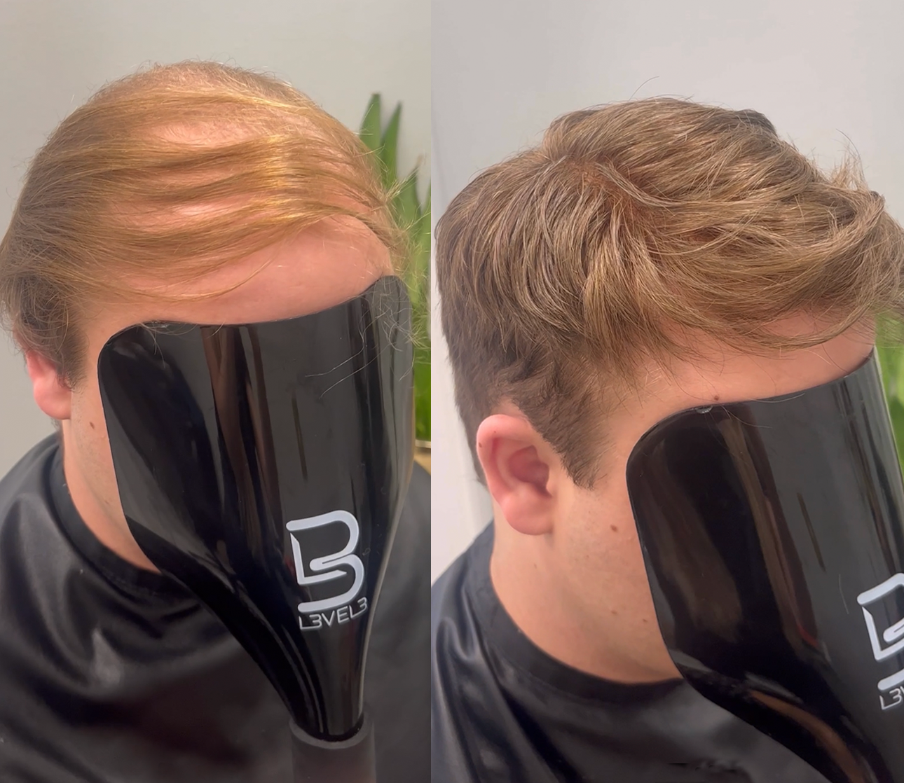
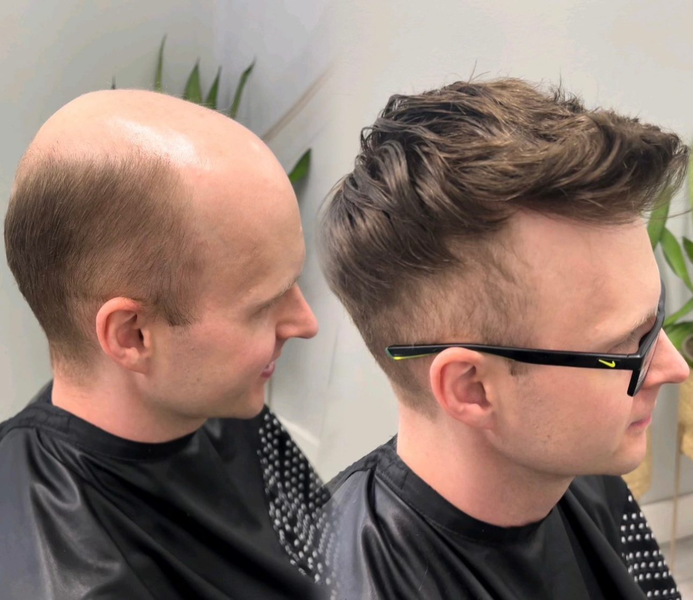
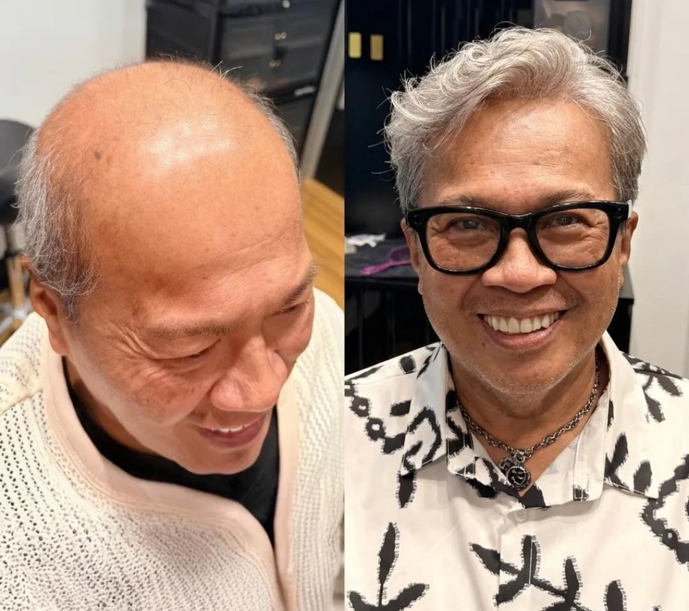
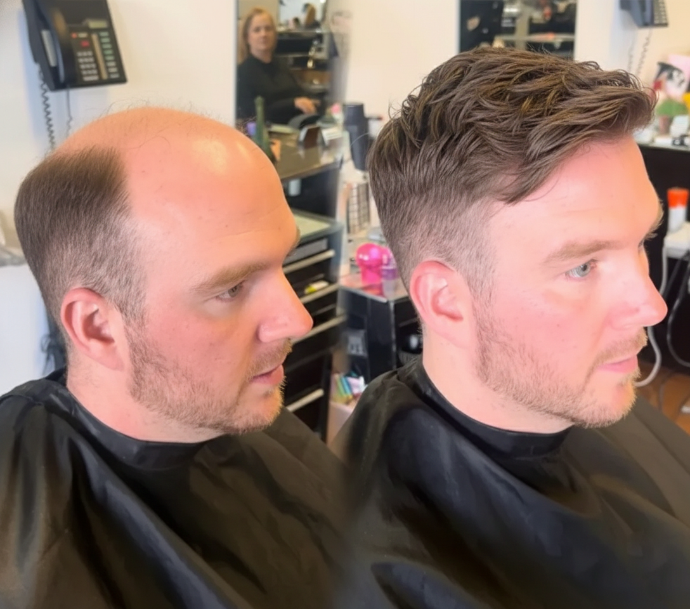
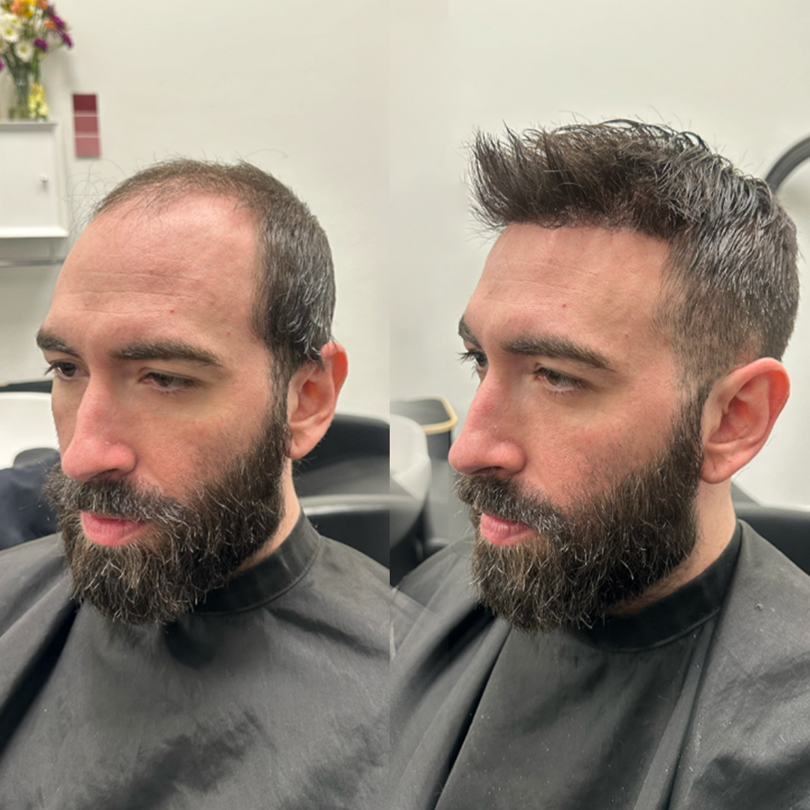
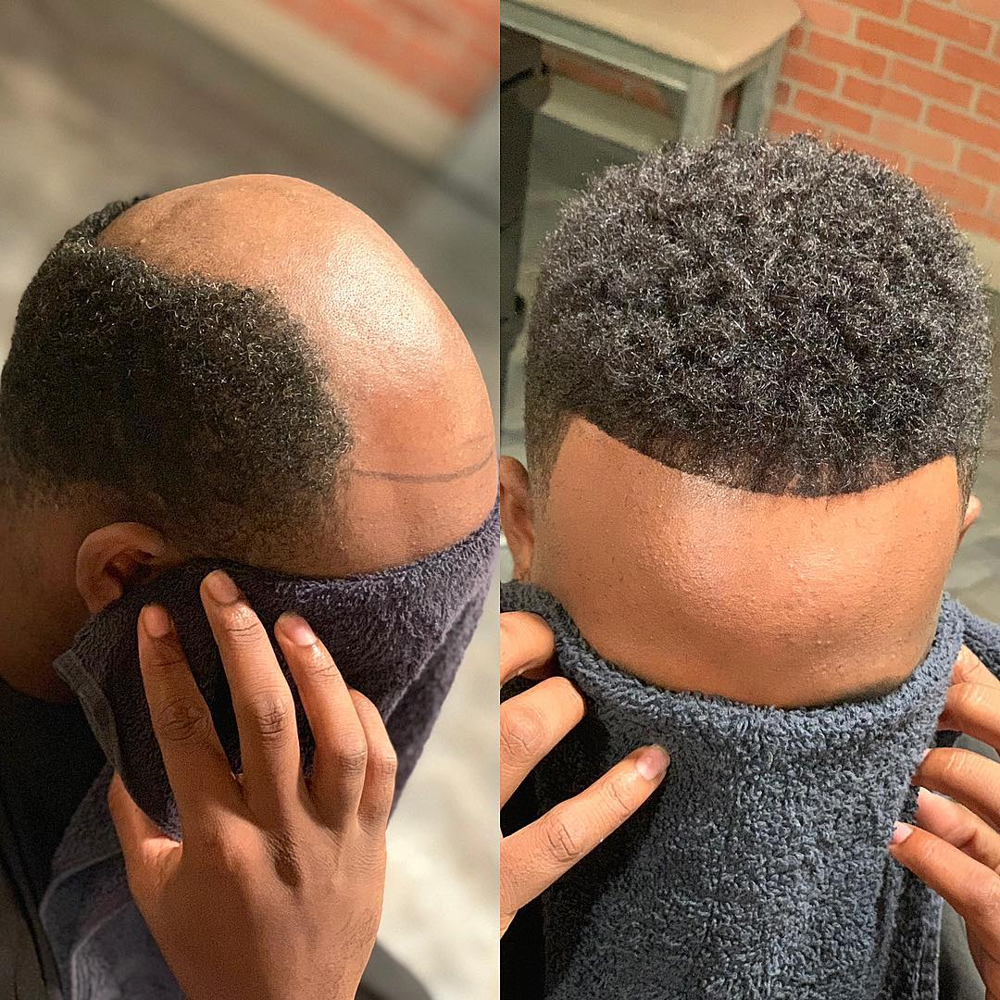
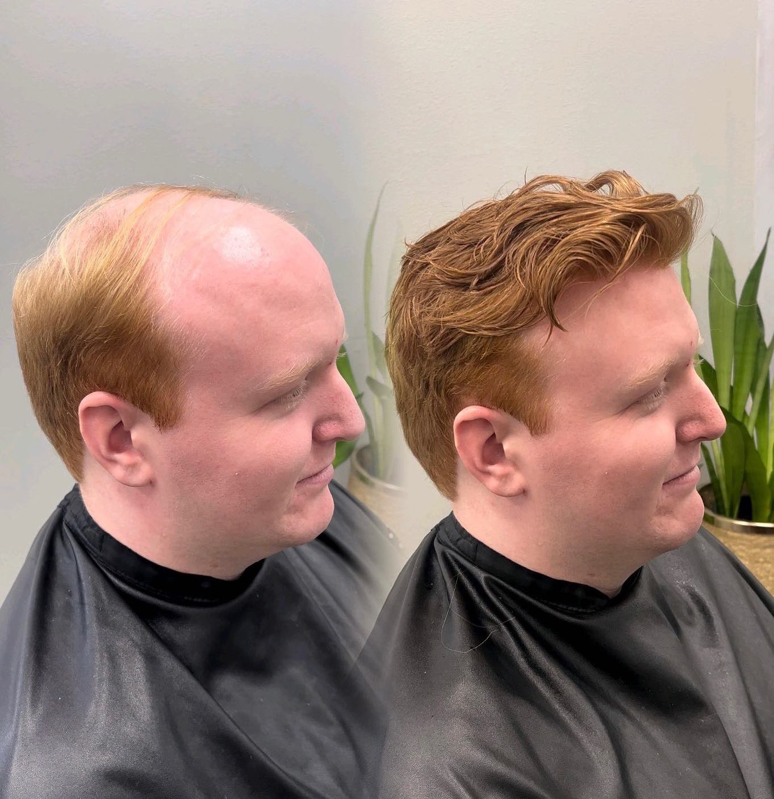
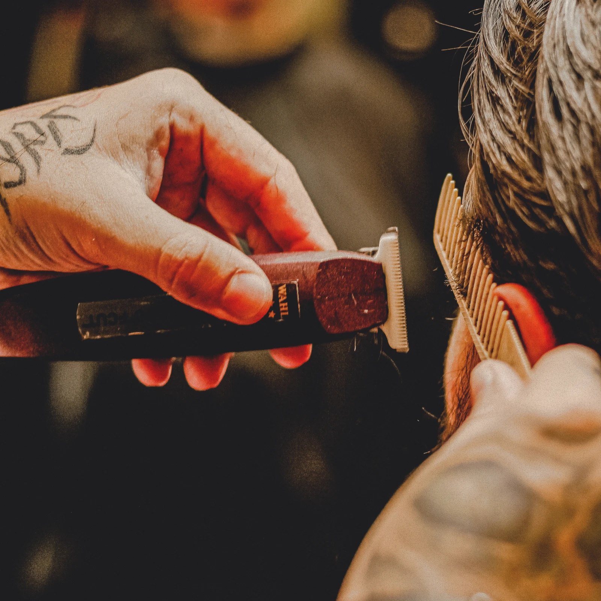

YOUR STYLE
Explore color, cut, and coverage that suit the look you want.
YOUR CITY, YOUR STATE HAIR SYSTEMS
Explore a fuller look without surgery. See the styles hair systems can create right here in Your City, Your State, learn how hair units and hair systems work, and tell Your Name what you have in mind.
WATCH · HAIR LOSS SOLUTIONS OVERVIEW
01 / A NEW POSSIBILITY
Hair loss is personal. A hair system can offer a fuller look without surgery, with choices in coverage, hairline, and style.
Book Free Hair System Consultation02 / EXAMPLE TRANSFORMATIONS
Compare short fades, curly styles, gray hair, and different coverage options to find the hair-system look you want to discuss with Your Name in Your City.









A hair system is a non-surgical hair replacement piece designed to create the appearance of fuller hair. Systems can vary in coverage, materials, color, and style.
From a subtle change at the hairline to fuller coverage, the look can be shaped around your preferred cut, color, and everyday routine.
04 / LIVING WITH A SYSTEM
Swimming, showering, workouts, and daily styling are all worth discussing when you choose a system. The right care routine starts with the fit, attachment, and products you use.
05 / WHY HAIR SYSTEMS
Hair systems offer choices for a range of hairlines, coverage needs, and styles.
Explore color, cut, and coverage that suit the look you want.
A hair system changes the appearance of hair without a surgical procedure.
Different systems and styles can create different results.
Fit, attachment, and upkeep affect how a system looks and feels over time.
06 / THE PROCESS
Start with the look you want. Coverage, hairline, cut, and daily care all help shape a result that fits your life.
Talk about the coverage, style, and routine you want.
Compare different looks, materials, and hairlines.
Consider the cut, attachment, and care approach that suit your routine.
Build a care routine around the system you choose.

07 / THE PERSON BEHIND REVIVE
Hair loss can change how you feel. I want to help you feel like yourself again.
I love helping men talk openly about hair loss and explore what a fuller look could mean for them. I listen first—to what has changed, what you miss about your hair, and the style you want to see in the mirror.
At Your Business Name in Your City, Your State, we can explore a look that feels like your own, whether you’re just noticing thinning or have been dealing with hair loss for years.
08 / GOOD TO KNOW
Get to know the details that matter: fit, daily care, materials, and how a hair system works with your lifestyle.
A hair system is a non-surgical piece designed to look like a fuller head of hair.
Water and workouts are possible with many hair systems. Your attachment method and care routine determine what works best.
A well-matched hairline, color, density, and cut help create a natural-looking result.
Lifespan varies with the material, attachment, maintenance, and how you wear it.
Hair systems can be secured using different attachment methods. The right choice depends on your skin, existing hair, and routine.
Systems can be made with human hair, synthetic hair, or a blend. Each has its own look and care routine.
09 / GET IN TOUCH
Tell us what you want to change and how to reach you. We’ll follow up to talk about your options.
Your hair-system inquiry has been received. We will reach out to you shortly.
YOUR NEXT CHAPTER STARTS HERE.